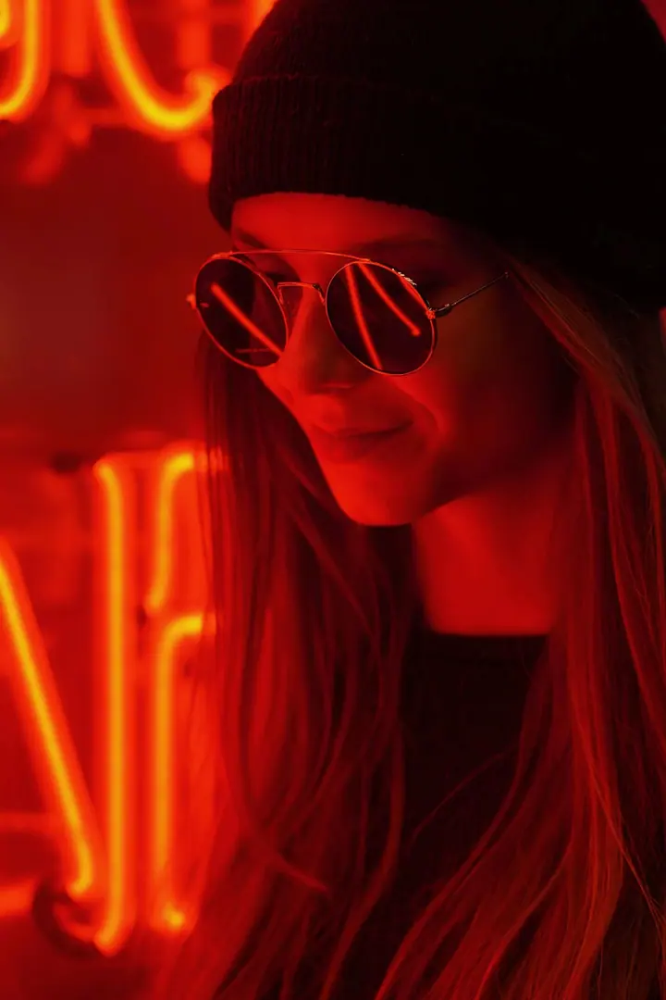
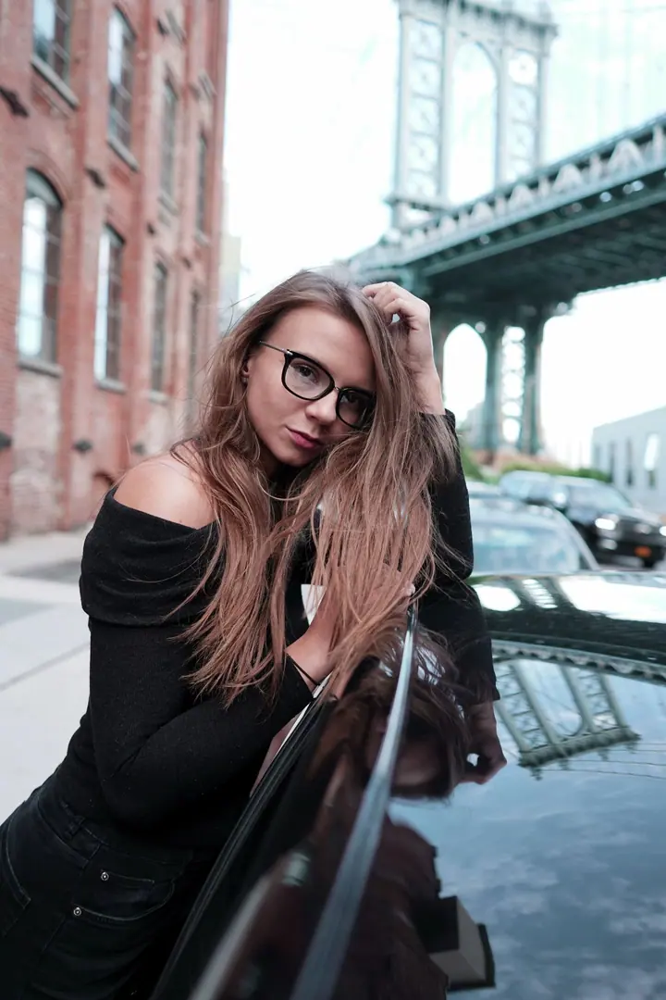

01 / 04
Reklama a značky
Fotografie a video pro reklamy, marketingové kampaně a sociální sítě, od firemní prezentace po produkty a detaily. Obsah, který odpovídá identitě vaší značky.
Zeptat se na termín→


Fotografie a video pro značky i lidi
Zeptat se na termín →(01) Ahoj
Jmenuji se Šimon Blažek a fotím i natáčím pro značky, realitní makléře, developery i jednotlivce. S kamerou jsem začínal u pouličních sportů a dnes se věnuji hlavně reklamě, svatbám a realitám. Většinu projektů dělám v Česku, ale za dobrým příběhem rád vycestuji .
(02) Co fotím
01 / 04
Fotografie a video pro reklamy, marketingové kampaně a sociální sítě, od firemní prezentace po produkty a detaily. Obsah, který odpovídá identitě vaší značky.
Zeptat se na termín→02 / 04
Portréty pro jednotlivce, které vycházejí z toho, kdo jste. Pracuji se světlem a barvou tak, aby výsledek měl atmosféru.
Zeptat se na termín→(04) Postup
Od první zprávy po hotovou galerii.
Krok 1 z 4
Úspěch začíná nasloucháním. Probereme vaši představu a požadavky, aby projekt od začátku mířil správným směrem.
Krok 2 z 4
Společně naplánujeme strategii projektu, od záběrů, které potřebujete, až po místo, kde se výsledek bude používat.
Krok 3 z 4
Na place zachytím všechny podstatné záběry a detaily na profesionální techniku. Průběžně kontroluji, že vše odpovídá domluvené vizi.
Krok 4 z 4
Střih, úpravy i color grading dělám sám. Dostanete hotový materiál technicky připravený k okamžitému použití.

Od prvního rozhovoru po finální střih.

(05) Za objektivem
Hodně kreativců vyrostlo na pouličních sportech, jako je skateboarding nebo freerunning, a tam začíná i můj příběh. Jako teenageři jsme se neustále natáčeli a fotili, abychom rozebrali pohyb, vylepšili techniku a posouvali se dál. Kamera pro mě byla nástrojem dlouho předtím, než se stala profesí.
Postupně jsem se od akčních sportů dostal k dalším oborům a z praktické pomůcky se stalo řemeslo. Dnes je mi 27 a soustředím se hlavně na komerční projekty, svatby a reality. Fotím a točím na profesionální techniku Sony a vše zpracovávám v DaVinci Resolve, FCPX, Lightroomu a Photoshopu, takže mám celou postprodukci pod kontrolou.
Do své práce zapojuji i moderní nástroje včetně umělé inteligence, které otevírají nové možnosti. Všechno ale začíná nasloucháním. Chci vaší představě porozumět hned od začátku a odvést práci tak dobře, abyste se rádi vrátili.
Šimon
Šimon Blažek · Reklamní fotograf a kameraman
Obojí. Pro značky, reality i svatby připravím fotografie i video, včetně střihu, barevných korekcí a zvuku.
Reklamní focení začíná od 6 000 Kč, focení eventů a akcí od 4 000 Kč a portréty od 2 000 Kč. Přesnou cenu připravím podle rozsahu vašeho projektu.
Ano. Většinu projektů dělám v České republice, ale cestování je běžnou součástí mé práce a za zakázkou rád vyrazím i do zahraničí.
Vše upravuji v DaVinci Resolve, FCPX, Lightroomu a Photoshopu. Kde to dává smysl, využívám i nástroje umělé inteligence, které umožňují vytvořit vizuály, jaké by jinak nešly.
(07) Kontakt
Napište pár vět o tom, co si představujete, a termín, který se vám hodí.